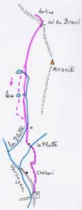
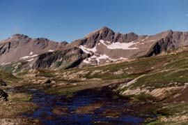

col du Breuil (2877 m)


Départ : pont de Chézari (2047 m)
Aller : 4,3 km, +873 m, 142 min
Retour : 4,3 km, - 873 m, 69 min
Difficulté : E
Période : juillet - septembre
Remarque sur la route d’accès : une route très étroite monte en 15 km au départ des anciens thermes de Bonneval, elle est réservée aux conducteurs avertis. En terre à partir de 1600 m ; mais c’est au dessous de Versoye qu’elle est la plus étroite. L’alpagiste la descend vers 7 h 30.
Bibliographie : Mérel (page 177), Brunet (itinéraire 11)
La sente démarre 200 m à D de la route d’alpage menant à Chézari (cairn, être attentif). Elle est ensuite mieux marquée, passe aux ruines de la Platte, laisse à G deux lacs et remonte des éboulis.
Possibilité d’aller par la crête à G aux ruines de deux fortins (2920 m).
Au retour, faire un détour par les deux lacs de la Platte.
Photo Guy Mounier : les gouilles de la Platte